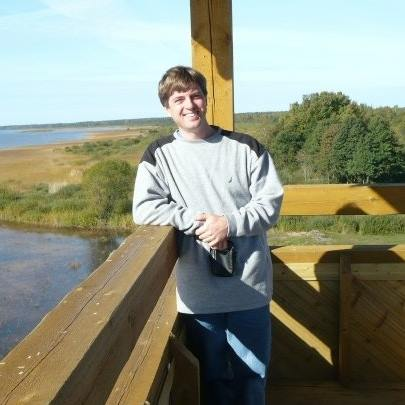

About me:
Born in Los Angeles, lived most of my life in the Idaho countryside
B.A. with Linguistics Emphasis, Boise State, May 2021
Areas of research: Finno-Ugric Linguistics (Estonian, Finnish, Karelian, Veps), Typology, Language Technology and Corpora/Corpus Linguistics, Digital Lexicography, Morphology & Syntax
Certificate in Estonian, Tartu University, 2009
Graduate studies at Tartu University pending admission in 2022
Employment:
Learning Assistant for LING 305-Introduction to Language Studies, Boise State, 2019-2021
I am a science communicator devoted to several fields of Linguistics, so I can see myself as a professor (here at BSU would be cool!). A few courses I could envision: Language Database Design and Linguistic Data Analysis, Digital Lexicography, surveys of Estonian, Finnish, Hungarian, and related languages.
| 
Võrts Lake Viewing Tower, Estonia |
Contact info |
This division will contain links to assignments and other sites of interest.
As you may have noticed, I have two primary hobbies: linguistics and travel. To me they go together. I would like to commit to a theme for this site, either travel or language study/presentations. I welcome your suggestions.
I plan to use the skills that I learn in this course to my advantage as a web publications editor and translator (another common title is Content Specialist). If you have a background in web design and language study, check out the career opportunities.
I am also taking LING 403-Corpus Linguistics. A couple a topics covered are word frequency and keywords, so this should be complimentary to designing efficient databases and search engines, which can in turn help with designing more user-friendly websites for customers.
Outside of class web design projects, I am working on my personal business page and my brother's Ida-Print 3-d printing services. I recently developed a website for a local Finnish-American historian, who specializes in historic barns and cabins.
| Assignment 1 | Media | Tags | Nested |